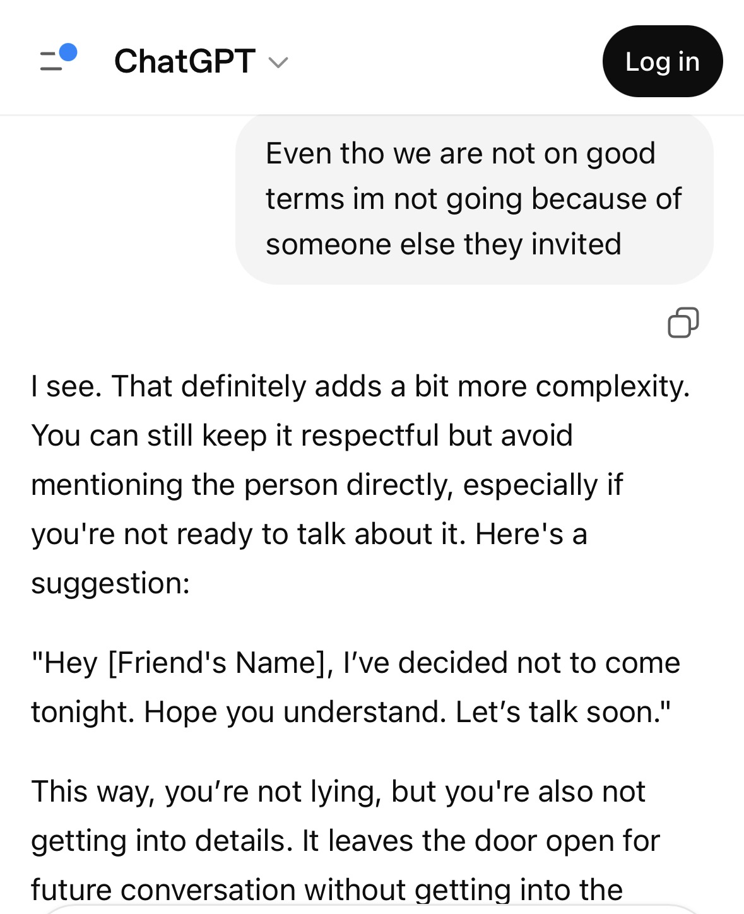

AI RISEN Assignment
Welcome to my AI RISEN assignment page! Here, you will find my assignment and a profile picture. Above you will find a navigation bar that will take you to my PHP pages. I hope you enjoy!
Welcome to my AI RISEN assignment page! Here, you will find my assignment and a profile picture. Above you will find a navigation bar that will take you to my PHP pages. I hope you enjoy!
Initial Prompt: “I need a email to quit my job” Dear [Manager’s Name], I hope you’re doing well. I am writing to formally resign from my position at [Company Name], effective [last working day, typically two weeks from today]. I appreciate the opportunity to have worked with the team and the experience I’ve gained during my time here. Thank you for your support and guidance. I will do my best to ensure a smooth transition before my departure. Please let me know how I can help during this time. Sincerely, [Your Name] RISEN Prompt: “I need a professional resignation email for a mid-year departure from my teaching job that sounds firm and respectful.” Dear [Principal’s Name], I am writing to formally resign from my position as [Your Position] at [School Name], effective [last working day]. This decision follows careful consideration of my experience this year. Due to ongoing concerns regarding my working conditions and overall professional environment, I have determined that it is in my best interest to step away from my role at this time. I recognize the impact of a mid-year resignation and will fulfill my responsibilities through my final day. I will also assist, as appropriate, in preparing materials to support continuity of instruction during the transition. Thank you for the opportunity to work with the students. Sincerely, [Your Full Name]
Initial Prompt: “Write a email to a employee that needs more training” Dear [Employee’s Name], I hope you are doing well. I am writing to follow up on your current performance in your role as [Job Title]. At this time, we have identified areas where additional training and support are needed to ensure you are fully meeting the expectations of the position. Specifically, we would like to focus on improving [specific skill/task area], as this is essential to your overall success in the role. To support you, we will be arranging additional training sessions and providing guidance to help you strengthen these skills. We expect your full participation and engagement during this process, as improvement in these areas is necessary moving forward. We value your contribution to the team and are committed to helping you succeed. Please let us know if you have any questions or if there is any additional support you need. Sincerely, [Your Name] [Your Position] RISEN Prompt: “I am a principal at a school and need to write an email to a employee who has violated the school handbook and needs more training working with behavioral children.” Dear [Employee’s Name], I hope you are doing well. I am writing to address a recent concern regarding adherence to our school handbook and expectations for staff conduct, particularly in relation to supporting students with behavioral needs. It has been brought to my attention that there have been instances where school procedures and behavioral support guidelines were not followed as outlined in our handbook. Consistency with these expectations is essential to maintaining a safe, structured, and supportive learning environment for all students. Given the importance of effectively working with students who have behavioral needs, you will be required to complete additional training focused on classroom management strategies, de-escalation techniques, and implementation of individualized behavior supports. This training will be scheduled in the coming [days/weeks], and your full participation is expected. Our goal is to ensure that all staff feel confident and supported in their roles while upholding the standards of our school community. We are committed to providing the resources necessary for your growth and success in this area. Please treat this matter with urgency and professionalism. Do not hesitate to reach out if you have any questions or need clarification regarding expectations moving forward. Sincerely, [Your Name] Principal, [School Name]
Using RISEN improved the response because each response became more specific. For example in the second response the ai became more respectful but professional with the friend, not giving too much of a response since I stated that I wasn't on good terms with them. The third response however let the friend know that there was more to me not coming, and left the door open for us to discuss it later.

